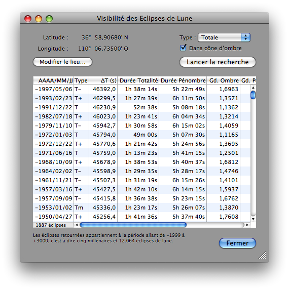
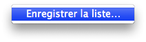

Fenêtre Visibilité des Eclipses de Lune
Pour visualiser et sauvegarder une liste de toutes les éclipses de Lune visibles depuis un lieu donné durant cinq millénaires (années de -1999 à +3000), vous devez ouvrir la fenêtre Visibilité des Eclipses de Lune depuis Lunar Eclipse Maestro.
-
Dans le menu Affichage sélectionnez Liste des éclipses visibles depuis un lieu…

-
Vous pouvez modifier le lieu et le type des éclipses à prendre en compte avant de lancer la recherche. Le temps d’exécution est toujours inférieur à la seconde pour la totalité des 12.064 éclipses de Lune.
Les informations suivantes sont affichées:
- Date de l’éclipse au format AAAA/MM/JJ
- Type de l’éclipse: T pour totale, P pour partielle et N pour pénombrale ou par la pénombre. Une étoile est ajoutée à droite du type quand le maximum local est sous l’horizon.
- ΔT: valeur de deltaT utilisée (en secondes)
- Durée de la totalité: renseignée uniquement pour les totales
- Durée de la pénombre
- Grandeur de l’ombre
- Grandeur de la pénombre
- Nom de la constellation où se produit le maximum de l’éclipse
-
A l’aide du menu contextuel disponible sur la liste, il est possible d’enregistrer les données dans un fichier texte avec chaque colonne séparée par une tabulation.

|